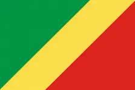

Relga-Zidrey Nkounkou
About Me
My name is Zidrey, from Brazzaville, Republic of Congo. I am majoring in Software Development, at BYU-Idaho. In my free time, I like playing the piano, studying English and Reading Holy Scriptures.
Republic of Congo

Located in Central Africa, the history of the Republic of the Congo has been marked by diverse civilisations: Indigenous, French and post-independence.
Official: Republic of the Congo
Capital: Brazzaville
Population: 5,970,424
Languages: French, Kikongo, Lingala
Area: 342,000 sq. km
Currency: XAF